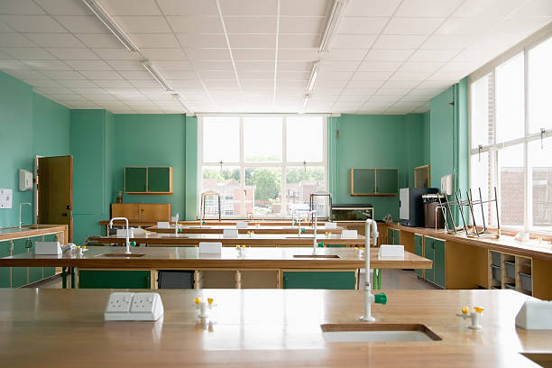

Academic Journey
KCPE Improvement
Our school performance has gradually improved from Mean Grade B in 2009 to B+ in 2024.
Steady Growth
Candidate numbers increased from 18 in 2009 to 28 in 2024 while performance continued to climb.

Nurturing Digital Literacy: Our Computer Lab
At FPFK Bethania Academy, we recognize that digital competency is a fundamental pillar of modern education. We provide a state-of-the-art computer laboratory to ensure our students are technologically proficient.
This facility enhances academic performance by providing hands-on experience in research and coding, preparing learners for a digital future.
- Modern Desktop Workstations
- Supervised High-Speed Internet
- Practical ICT Curriculum
Igniting Scientific Discovery: Our Laboratory
Our dedicated science laboratory is where critical thinking meets practical innovation. It allows students to transform abstract concepts in Biology, Chemistry, and Physics into measurable experiments.
By prioritizing hands-on discovery, we foster a passion for STEM fields and equip our students with the skills to solve real-world problems.
- Advanced Scientific Apparatus
- Safe & Controlled Environment
- Guided Practical Assessments

KJSEA 2025 Transition Results
Our learners successfully transitioned to the following Senior Schools:
| Senior School | Cluster |
|---|---|
| Maseno High School | C1 |
| Chavakali High School | C1 |
| Chavakali High School | C1 |
| Alliance Girls | C1 |
| Bura Girls | C1 |
| Bura Girls | C1 |
| Ribe Girls | C1 |
| St Mary High Yala | C1 |
| Kolanya Girls National Sch | C1 |
| Kinango High Sch | C1 |
| Matuga Girls | C1 |
| Teremi High Sch | C2 |
| Nyawara Girls | C2 |
| Moi Gesusu High Sch | C2 |
| St Pauls Gekano | C2 |
| St John Nyamagwa | C2 |
| Kabuyefwe Girls | C2 |
| Mwakitawa Girls | C2 |
| Ambira High Sch | C2 |
| Waa Girls | C2 |
| Nyamira Girls | C2 |
| Olympic High Sch | C4 |
| Mwakirunge Sec | C4 |
Enrollment Statistics
| Year | Boys | Girls | Total |
|---|---|---|---|
| 2020 | 15 | 20 | 35 |
| 2021 | 17 | 19 | 36 |
| 2022 | 19 | 19 | 38 |
| 2023 | 21 | 20 | 41 |
| 2024 | 24 | 20 | 44 |
| 2025 | 27 | 26 | 53 |
Impact on the Community
FPFK Bethania Academy has become a vital institution in Likoni by supporting vulnerable learners:
Aga Khan Foundation
In 2024, 44 students were supported. This partnership continues to provide essential fee support for our Junior Secondary learners in 2025.
Local FPFK Church
The church currently supports 53 students in 2025 with both school fees and nutritional programs, ensuring academic continuity.